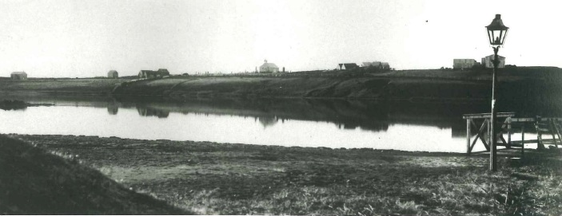

1807 – um 1900
Ljósmynd sem sýnir frá hægri, Skólabæ (ber við ljósastaurinn), Melshús, líkhúsið inni í kirkjugarðinum og Melkot. Skólabær var reistur stuttu eftir að Hólavallaskóli var rifinn árið 1807 og má vafalítið rekja nafn bæjarins til skólans. Þetta var lengst af þriggja bursta torfbær sem stóð fram undir árið 1900. Bærinn stóð þar sem nú er Suðurgata 26.

Skólabær og nágrannar